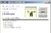
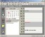
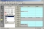
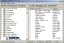
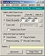

We can build you a custom version of our products for under $400, or a new Windows application starting at $1500
Contact us
Contact us
Autobackup-PRO
 The best value insurance you can get for your documents. Automatically saves your recently edited files to a separate directory with powerful options for multiple copies. More >Electronic Diary
 The electronic diary manages your tasks and appointments with Daily, Weekly and Monthly views. Comes with Infolink to keep you reminded of meetings even if the main diary isnt running. More >Network Diary
 The is the network version of the electronic diary, which lets staff book meetings and share information from a central server. More >Shopping List
 Shopping List PRO has all the features of the free version, but lets you modify lists and columns. More >Timer
 Have up to 32 Alarms, Timers and Stopwatches running. Great for billing clients and seeing how long you spend on tasks. Play WAV files, launch programs and has daily alarms More >We can build you a custom version of any of these applications at a reasonable price